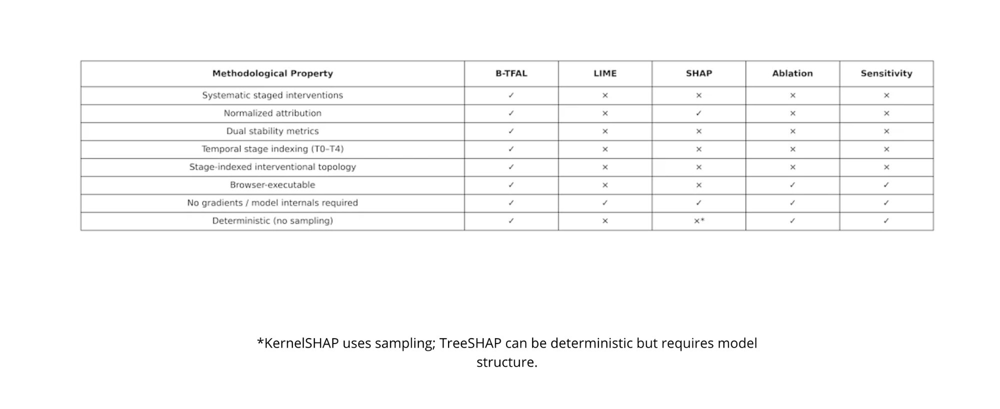
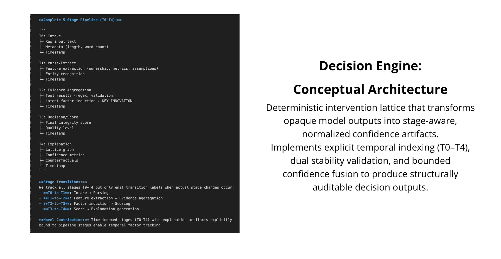
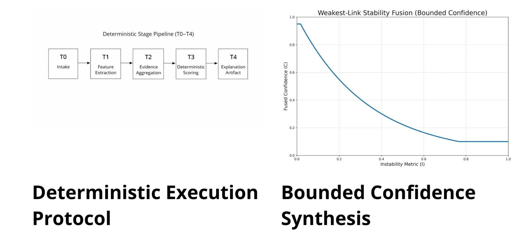
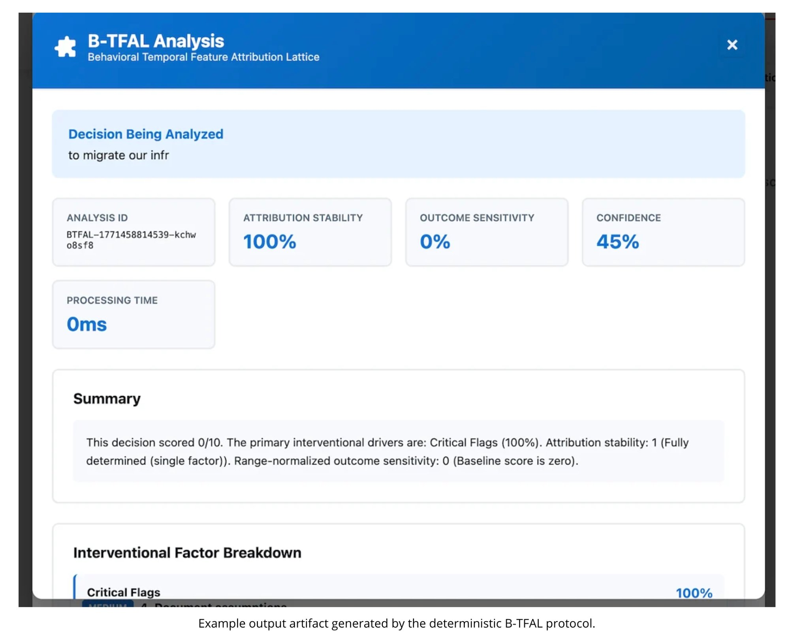
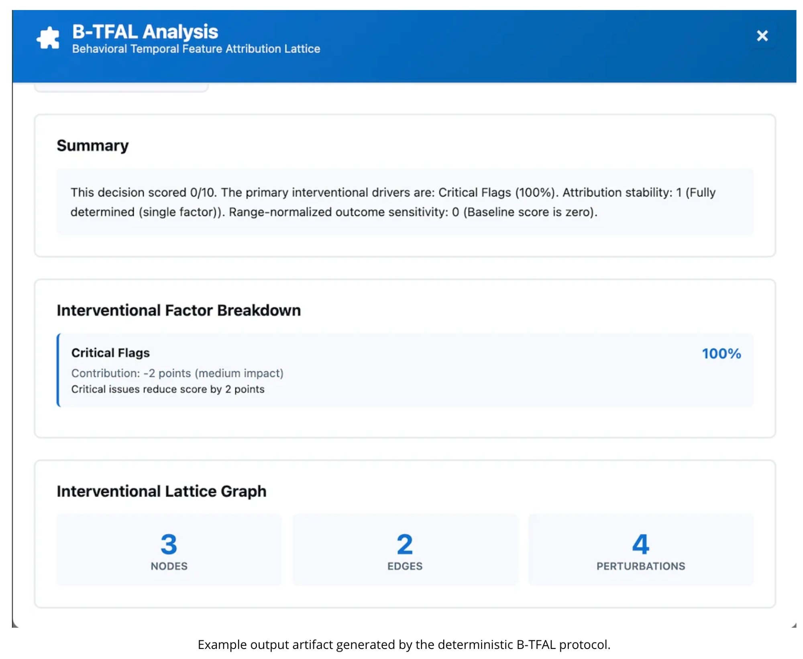
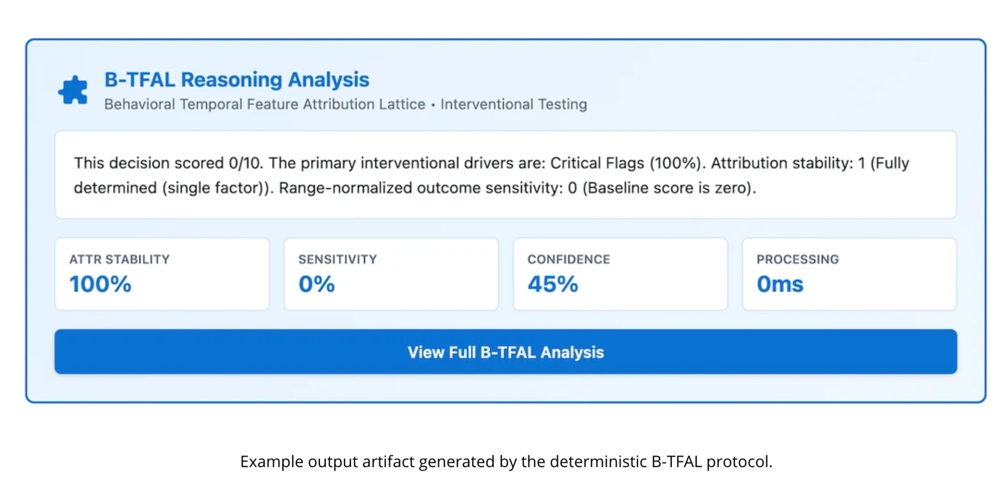
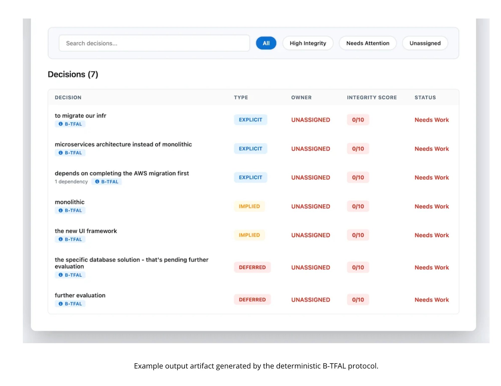

A deterministic protocol that stress-tests black-box AI decisions and produces bounded, regulator-grade confidence artifacts. No model access. No randomness. Fully reproducible.
Every major explainability method in production today — SHAP, LIME, ablation — relies on sampling, requires model internals, or produces non-deterministic outputs. Run the same explanation twice and you get two different answers. That's not an explanation. It's a guess.
B-TFAL eliminates this entirely. It treats explanation as a staged intervention problem: systematically removing supports from a decision and measuring what changes, the way you'd stress-test a bridge. The result is a confidence score that contracts automatically when instability is detected, with zero variance across runs.

B-TFAL is the only method that satisfies all nine methodological properties simultaneously.
The framework implements a five-stage deterministic pipeline (T0–T4). Each stage produces timestamped, structurally auditable artifacts. Feature extraction, evidence aggregation, deterministic scoring, and explanation generation are explicitly indexed — enabling causal tracing instead of flat feature masking.

Left: complete stage pipeline with transitions and novel contributions. Right: deterministic intervention lattice architecture.
Identical inputs produce identical explanation artifacts. No stochastic sampling, no gradient access, no model internals required. Fully reproducible across runs, environments, and implementations.
Confidence is computed through weakest-link fusion of two independent stability components: attribution stability and outcome sensitivity. As instability increases, fused confidence contracts monotonically. The system cannot produce overconfident outputs — the math prevents it.

Left: deterministic stage pipeline (T0–T4). Right: weakest-link stability fusion — confidence contracts monotonically under instability.
B-TFAL generates structured, machine-verifiable decision artifacts — not natural language summaries. Every output includes an analysis ID, attribution stability score, outcome sensitivity measurement, fused confidence value, processing time, and a complete interventional factor breakdown.

Full analysis output: decision input, stability metrics, confidence score, and 0ms processing time.

Detailed view: summary, interventional factor breakdown with contribution weights, and lattice graph metrics.

Compact reasoning card — designed for integration into existing enterprise decision workflows.
B-TFAL plugs directly into decision tracking systems, tagging each decision with its analysis type, integrity score, and status. This is what compliance teams need — not a one-off explanation, but a persistent audit trail across every decision a model makes.

Decision registry with B-TFAL integrity scoring, type classification (explicit, implied, deferred), and status tracking.
The EU AI Act (Article 13, Article 86) begins enforcement in August 2026. The Colorado AI Act takes effect in June 2026. Both require explainability documentation for high-risk AI systems. The industry doesn't have a deterministic solution for this yet.
Browser-executable. O(n) runtime. No backend dependencies. No gradients. No retraining. Drop it into any production system and it works.